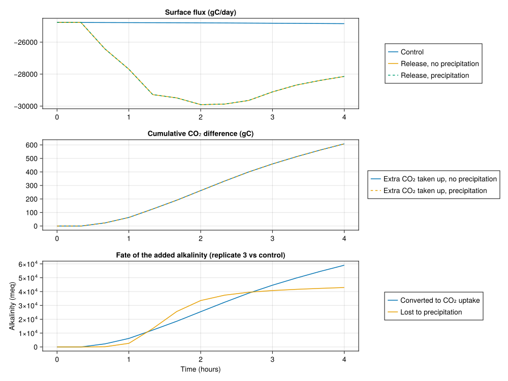

Idealised ocean alkalinity enhancement (OAE)
In this example we setup a 3D model driven by a constant wind stress, with 3 instances of the carbon chemistry system (DIC, alkalinity, and particulate inorganic carbon):
- the control, which receives no alkalinity,
- the release with secondary precipitation disabled (
calcium_carbonate_precipitation_rate = 0), - the release with secondary precipitation active.
Replicates 1 and 3 differ only by the alkalinity release, so their difference is the OAE signal; replicates 2 and 3 differ only by the precipitation rate, so their difference is what secondary precipitation costs.
We use ExplicitCalciumCarbonate rather than CarbonateSystem so that the particulate inorganic carbon formed by the calcifiers, and by abiotic precipitation once the alkalinity addition pushes the saturation state Ω up, is carried as its own sinking CaCO₃ tracer rather than being routed straight back into DIC/Alk.
Install dependencies
First we ensure we have the required dependencies installed
using Pkg
pkg "add OceanBioME, Oceananigans, CairoMakie"Model setup
using Oceananigans, OceanBioME, Oceananigans.Units, CUDA
using OceanBioME.Models.GasExchangeModel: CarbonDioxideConcentration
using OceanBioME.Models.CarbonChemistryModel: KSP_aragonitewe define the grid and the biogeochemistry, adding in the inorganic_carbon with 3 replicates
grid = RectilinearGrid(GPU();
size = (64, 64, 8),
extent = (500, 500, 15))
precipitation_rate = 0.03 / day3.472222222222222e-7use aragonite rather than the default calcite solubility, as that is the phase usually discussed in the OAE secondary precipitation literature
carbon_chemistry = CarbonChemistry(; calcium_carbonate_solubility = KSP_aragonite())
biogeochemistry = LOBSTER(grid;
inorganic_carbon =
ExplicitCalciumCarbonate(grid;
replicates = 3,
carbon_chemistry,
calcium_carbonate_precipitation_rate =
(precipitation_rate, 0, precipitation_rate),
calcium_carbonate_precipitation_exponent = 3))NutrientsPlanktonDetritus{Float64} with (:NO₃, :NH₄, :P, :Z, :DOM, :sPOM, :bPOM, :DIC1, :DIC2, :DIC3, :Alk1, :Alk2, :Alk3, :CaCO₃1, :CaCO₃2, :CaCO₃3)
Light attenuation: TwoBandPhotosyntheticallyActiveRadiation{Float64}
Sediment: Nothing
Particles: Nothing
Modifiers: NothingSecondary precipitation is off by default, so we turn it on for replicates 1 and 3. The rate law is
\[\text{precipitation} = k \max(0, \Omega - 1)^n [CaCO_3],\]
following the empirical description of calcite precipitation from seawater of Zuddas and Mucci (1994) and Zuddas and Mucci (1998). This example is a fictional scenario with fictional parameter values for k and n, chosen only to give a visible, numerically well-behaved precipitation signal - they should not be read as literature values or as a prediction of a real deployment.
Next we have to construct the boundary conditions for the DIC, changing the defaults to specify that the DIC and Alkalinity for each realisation's calculation should be its own DIC1/Alk1, DIC2/Alk2, or DIC3/Alk3. Then we can put the boundary conditions together.
wind_speed = 5 # m/s
Cᴰ = 2e-3
ρₐ = 1.2
ρₒ = 1026
CO₂_flux1 =
CarbonDioxideGasExchangeBoundaryCondition(;
wind_speed,
water_concentration = CarbonDioxideConcentration(; DIC = :DIC1,
Alk = :Alk1)
)
CO₂_flux2 =
CarbonDioxideGasExchangeBoundaryCondition(;
wind_speed,
water_concentration = CarbonDioxideConcentration(; DIC = :DIC2,
Alk = :Alk2)
)
CO₂_flux3 =
CarbonDioxideGasExchangeBoundaryCondition(;
wind_speed,
water_concentration = CarbonDioxideConcentration(; DIC = :DIC3,
Alk = :Alk3)
)
wind = FluxBoundaryCondition(-ρₐ/ρₒ * Cᴰ * wind_speed^2)
boundary_conditions = (; DIC1 = FieldBoundaryConditions(top = CO₂_flux1),
DIC2 = FieldBoundaryConditions(top = CO₂_flux2),
DIC3 = FieldBoundaryConditions(top = CO₂_flux3),
u = FieldBoundaryConditions(top = wind))(DIC1 = Oceananigans.FieldBoundaryConditions, with boundary conditions
├── west: DefaultBoundaryCondition (FluxBoundaryCondition: Nothing)
├── east: DefaultBoundaryCondition (FluxBoundaryCondition: Nothing)
├── south: DefaultBoundaryCondition (FluxBoundaryCondition: Nothing)
├── north: DefaultBoundaryCondition (FluxBoundaryCondition: Nothing)
├── bottom: DefaultBoundaryCondition (FluxBoundaryCondition: Nothing)
├── top: FluxBoundaryCondition: DiscreteBoundaryFunction with GasExchange
└── immersed: DefaultBoundaryCondition (FluxBoundaryCondition: Nothing), DIC2 = Oceananigans.FieldBoundaryConditions, with boundary conditions
├── west: DefaultBoundaryCondition (FluxBoundaryCondition: Nothing)
├── east: DefaultBoundaryCondition (FluxBoundaryCondition: Nothing)
├── south: DefaultBoundaryCondition (FluxBoundaryCondition: Nothing)
├── north: DefaultBoundaryCondition (FluxBoundaryCondition: Nothing)
├── bottom: DefaultBoundaryCondition (FluxBoundaryCondition: Nothing)
├── top: FluxBoundaryCondition: DiscreteBoundaryFunction with GasExchange
└── immersed: DefaultBoundaryCondition (FluxBoundaryCondition: Nothing), DIC3 = Oceananigans.FieldBoundaryConditions, with boundary conditions
├── west: DefaultBoundaryCondition (FluxBoundaryCondition: Nothing)
├── east: DefaultBoundaryCondition (FluxBoundaryCondition: Nothing)
├── south: DefaultBoundaryCondition (FluxBoundaryCondition: Nothing)
├── north: DefaultBoundaryCondition (FluxBoundaryCondition: Nothing)
├── bottom: DefaultBoundaryCondition (FluxBoundaryCondition: Nothing)
├── top: FluxBoundaryCondition: DiscreteBoundaryFunction with GasExchange
└── immersed: DefaultBoundaryCondition (FluxBoundaryCondition: Nothing), u = Oceananigans.FieldBoundaryConditions, with boundary conditions
├── west: DefaultBoundaryCondition (FluxBoundaryCondition: Nothing)
├── east: DefaultBoundaryCondition (FluxBoundaryCondition: Nothing)
├── south: DefaultBoundaryCondition (FluxBoundaryCondition: Nothing)
├── north: DefaultBoundaryCondition (FluxBoundaryCondition: Nothing)
├── bottom: DefaultBoundaryCondition (FluxBoundaryCondition: Nothing)
├── top: FluxBoundaryCondition: -5.84795e-5
└── immersed: DefaultBoundaryCondition (FluxBoundaryCondition: Nothing))Next we define an alkalinity release in a circle in the center for 1 hour
@inline alkalinity_release(x, y, z, t, params) =
ifelse((params.start_time <= t < params.start_time + params.duration) &
(z > params.depth) &
((x-250)^2 + (y-250)^2 < params.radius^2),
params.release_rate, 0)
total_release = 2.5e7 # 1t NaOH = 25000mol NaOH = 2.5e7 meq Alk
duration = 1hour
depth = -1
radius = 50
release_rate = total_release/duration/(π*radius^2*abs(depth))
oae = Forcing(alkalinity_release;
parameters = (; start_time = 20minutes,
duration,
release_rate,
radius,
depth))ContinuousForcing{@NamedTuple{start_time::Float64, duration::Float64, release_rate::Float64, radius::Int64, depth::Int64}}
├── func: alkalinity_release (generic function with 1 method)
├── parameters: (start_time = 1200.0, duration = 3600.0, release_rate = 0.8841941282883075, radius = 50, depth = -1)
└── field dependencies: ()And then put the model together with Alk2 and Alk3 both receiving the release while Alk1 (the control) evolves normally
model = NonhydrostaticModel(grid;
coriolis = FPlane(latitude = 45),
boundary_conditions,
biogeochemistry,
advection = WENO(),
tracers = (:T, :S),
forcing = (; Alk2 = oae, Alk3 = oae))
set!(model, P = 1, NO₃ = 10,
T = 15, S = 35,
DIC1 = 2000, Alk1 = 2300, CaCO₃1 = 0.1,
DIC2 = 2000, Alk2 = 2300, CaCO₃2 = 0.1,
DIC3 = 2000, Alk3 = 2300, CaCO₃3 = 0.1,
u = (x, y, z) -> randn()/2)Then we can setup a simulation with a variable timestep and progress message and output the tracers, running for longer than the release itself so the air-sea flux has time to respond
simulation = Simulation(model, Δt = 5, stop_time = 4hours)
conjure_time_step_wizard!(simulation; cfl = 0.5)
prog(sim) =
@info prettytime(sim)*" in "*prettytime(sim.run_wall_time)*" with Δt = "*prettytime(sim.Δt)
add_callback!(simulation, prog, IterationInterval(100))we save the saturation states alongside the tracers so the state of the explicit calcium carbonate pool can be inspected
outputs = merge(model.tracers, (; Ω1 = model.auxiliary_fields.Ω1,
Ω2 = model.auxiliary_fields.Ω2,
Ω3 = model.auxiliary_fields.Ω3))
simulation.output_writers[:tracers] = JLD2Writer(model, outputs;
filename = "oae.jld2",
schedule = AveragedTimeInterval(20minutes),
overwrite_existing = true)JLD2Writer scheduled on TimeInterval(20 minutes):
├── filepath: oae.jld2
├── 21 outputs: (T, S, NO₃, NH₄, P, Z, DOM, sPOM, bPOM, DIC1, DIC2, DIC3, Alk1, Alk2, Alk3, CaCO₃1, CaCO₃2, CaCO₃3, Ω1, Ω2, Ω3) averaged on AveragedTimeInterval(window=20 minutes, stride=1, interval=20 minutes)
├── array_type: Array{Float32}
├── including: [:coriolis, :buoyancy, :closure]
├── file_splitting: NoFileSplitting
└── file size: 0 bytes (file not yet created)We can also create a BoundaryConditionOperation which records the flux through the top boundary for both the DIC fields which we can save
qCO₂1 = BoundaryConditionOperation(model.tracers.DIC1, :top, model)
qCO₂2 = BoundaryConditionOperation(model.tracers.DIC2, :top, model)
qCO₂3 = BoundaryConditionOperation(model.tracers.DIC3, :top, model)
simulation.output_writers[:carbon_flux] = JLD2Writer(model, (; qCO₂1, qCO₂2, qCO₂3),
indices = (:, :, grid.Nz),
filename = "oae_surface_flux.jld2",
schedule = TimeInterval(20minutes),
overwrite_existing = true)JLD2Writer scheduled on TimeInterval(20 minutes):
├── filepath: oae_surface_flux.jld2
├── 3 outputs: (qCO₂1, qCO₂2, qCO₂3)
├── array_type: Array{Float32}
├── including: [:coriolis, :buoyancy, :closure]
├── file_splitting: NoFileSplitting
└── file size: 0 bytes (file not yet created)and then run the simulation
run!(simulation)[ Info: Initializing simulation...
[ Info: 0 seconds in 0 seconds with Δt = 2.500 seconds
[ Info: ... simulation initialization complete (1.536 minutes)
[ Info: Executing initial time step...
[ Info: ... initial time step complete (7.256 seconds).
[ Info: 5.185 minutes in 2.777 minutes with Δt = 4.968 seconds
[ Info: 18.381 minutes in 3.948 minutes with Δt = 12.885 seconds
[ Info: 49.429 minutes in 5.128 minutes with Δt = 21.136 seconds
[ Info: 1.333 hours in 6.307 minutes with Δt = 14.352 seconds
[ Info: 1.729 hours in 7.486 minutes with Δt = 12.083 seconds
[ Info: 2.047 hours in 8.662 minutes with Δt = 11.080 seconds
[ Info: 2.336 hours in 9.860 minutes with Δt = 9.665 seconds
[ Info: 2.588 hours in 10.992 minutes with Δt = 8.230 seconds
[ Info: 2.820 hours in 12.138 minutes with Δt = 8.632 seconds
[ Info: 3.056 hours in 13.282 minutes with Δt = 7.705 seconds
[ Info: 3.264 hours in 14.422 minutes with Δt = 8.240 seconds
[ Info: 3.476 hours in 15.563 minutes with Δt = 7.756 seconds
[ Info: 3.678 hours in 16.702 minutes with Δt = 7.121 seconds
[ Info: 3.882 hours in 17.836 minutes with Δt = 7.493 seconds
[ Info: Simulation is stopping after running for 18.505 minutes.
[ Info: Simulation time 4 hours equals or exceeds stop time 4 hours.
Finally we load the data and create some plots
using CairoMakie, Statistics
fds = FieldDataset("oae.jld2")
fds_surface = FieldDataset("oae_surface_flux.jld2")
n = Observable(1)
N = length(fds["P"])13compare replicate 3 (release, precipitation active) with replicate 1 (the control)
Δ_Alk = @lift (mean(interior(fds["Alk3"][$n]), dims=3)[:, :, 1] .-
mean(interior(fds["Alk1"][$n]), dims=3)[:, :, 1]).* 15
Δ_qCO₂ = @lift (interior(fds_surface["qCO₂3"][$n], :, :, 1) .-
interior(fds_surface["qCO₂1"][$n], :, :, 1)) .* (12+2*16)*1e-3*day
Δ_CaCO₃ = @lift (mean(interior(fds["CaCO₃3"][$n]), dims=3)[:, :, 1] .-
mean(interior(fds["CaCO₃1"][$n]), dims=3)[:, :, 1]) .* 15
Δ_Alk_range = maximum(abs, mean(interior(fds["Alk3"]), dims = 3) .-
mean(interior(fds["Alk1"]), dims = 3)) .* 15
Δ_CaCO₃_range = maximum(abs, mean(interior(fds["CaCO₃3"]), dims = 3) .-
mean(interior(fds["CaCO₃1"]), dims = 3)) .* 15
Δ_qCO₂_range = maximum(abs, interior(fds_surface["qCO₂3"]) .-
interior(fds_surface["qCO₂1"])) .* (12+2*16)*1e-3*day
xc = xnodes(fds["P"])
yc = ynodes(fds["P"])
fig = Figure(size=(1500, 500))
ax = Axis(fig[1, 1], aspect = DataAspect())
ax2 = Axis(fig[1, 2], aspect = DataAspect())
ax3 = Axis(fig[1, 3], aspect = DataAspect())
hm = heatmap!(ax, xc, yc, Δ_Alk, colormap = :balance, colorrange = (-1, 1) .* Δ_Alk_range)
hm2 = heatmap!(ax2, xc, yc, Δ_qCO₂, colormap = :balance, colorrange = (-1, 1) .* Δ_qCO₂_range)
hm3 = heatmap!(ax3, xc, yc, Δ_CaCO₃, colormap = :balance, colorrange = (-1, 1) .* Δ_CaCO₃_range)
Colorbar(fig[2, 1], hm, vertical = false,
label = "Alkalinity pertubation (mmol / m²)",
flip_vertical_label = true)
Colorbar(fig[2, 2], hm2, vertical = false,
label = "Surface CO₂ flux difference (gCO₂/m²/day)",
flip_vertical_label = true)
Colorbar(fig[2, 3], hm3, vertical = false,
label = "Calcium carbonate difference (mmol / m²)",
flip_vertical_label = true)
supertitle = Label(fig[0, :], (@lift prettytime(fds["P"].times[$n])))
CairoMakie.record(fig, "oae.mp4", 1:N, framerate=10) do i
@info "$i"
n[] = i
end"oae.mp4"fig = Figure(size = (1000, 750));
ax = Axis(fig[1, 1], title = "Surface flux (gC/day)")
surface_area = 500*500
mmol_to_g = 12/1000
mean_flux(name) = mean(interior(fds_surface[name], :, :, 1, :), dims = (1, 2))[1, 1, :]
total_carbon_flux1 = mean_flux("qCO₂1")
total_carbon_flux2 = mean_flux("qCO₂2")
total_carbon_flux3 = mean_flux("qCO₂3")
times = fds_surface["qCO₂1"].times ./ hours
lines!(ax, times, total_carbon_flux1 .* mmol_to_g * surface_area * day, label = "Control")
lines!(ax, times, total_carbon_flux2 .* mmol_to_g * surface_area * day, label = "Release, no precipitation")
lines!(ax, times, total_carbon_flux3 .* mmol_to_g * surface_area * day, label = "Release, precipitation",
linestyle = :dash)
Legend(fig[1, 2], ax)Legend()Cumulative difference in the air-sea CO₂ flux between replicate pairs
ax2 = Axis(fig[2, 1], title = "Cumulative CO₂ difference (gC)")
Δt_save = diff(fds_surface["qCO₂1"].times)[1]1200.0a negative flux is carbon entering the ocean, so a - b is the extra carbon taken up by b
cumulative_uptake(a, b) = cumsum(Δt_save .* (mean_flux(a) .- mean_flux(b)) .* mmol_to_g * surface_area)
lines!(ax2, times, cumulative_uptake("qCO₂1", "qCO₂2"),
label = "Extra CO₂ taken up, no precipitation")
lines!(ax2, times, cumulative_uptake("qCO₂1", "qCO₂3"),
label = "Extra CO₂ taken up, precipitation",
linestyle = :dash)
Legend(fig[2, 2], ax2)
domain_volume = surface_area * 153750000Finally, the fate of the added alkalinity itself: how much has been realised as CO₂ uptake versus destroyed by precipitation. The uptake is converted to an alkalinity equivalent using the equilibrium efficiency $\eta = \Delta DIC / \Delta TA$, found by asking what DIC equilibrates with the atmosphere before and after an addition:
function equilibrium_DIC(Alk; target = 413.0, T = 15.0, S = 35.0)
lo, hi = 1000.0, 3500.0
for _ in 1:60
mid = (lo + hi) / 2
carbon_chemistry(; DIC = mid, Alk, T, S) < target ? (lo = mid) : (hi = mid)
end
return (lo + hi) / 2
end
η = (equilibrium_DIC(2400.0) - equilibrium_DIC(2300.0)) / 100
ax3 = Axis(fig[3, 1], xlabel = "Time (hours)", ylabel = "Alkalinity (meq)",
title = "Fate of the added alkalinity (replicate 3 vs control)")
TA_realised = cumsum(Δt_save .* (mean_flux("qCO₂1") .- mean_flux("qCO₂3")) .* surface_area) ./ η
TA_precipitated = [2 * mean(interior(fds["CaCO₃3"][i]) .- interior(fds["CaCO₃1"][i])) * domain_volume
for i in 1:N]
lines!(ax3, times, TA_realised, label = "Converted to CO₂ uptake")
lines!(ax3, fds["CaCO₃1"].times./hours, TA_precipitated, label = "Lost to precipitation")
Legend(fig[3, 2], ax3)
fig
This page was generated using Literate.jl.